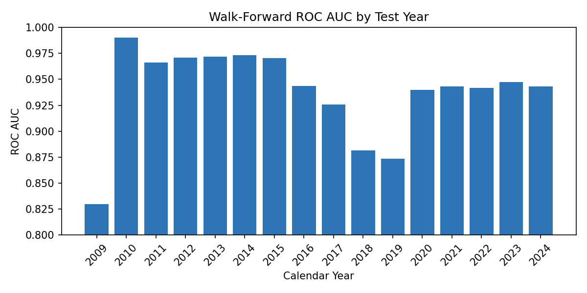
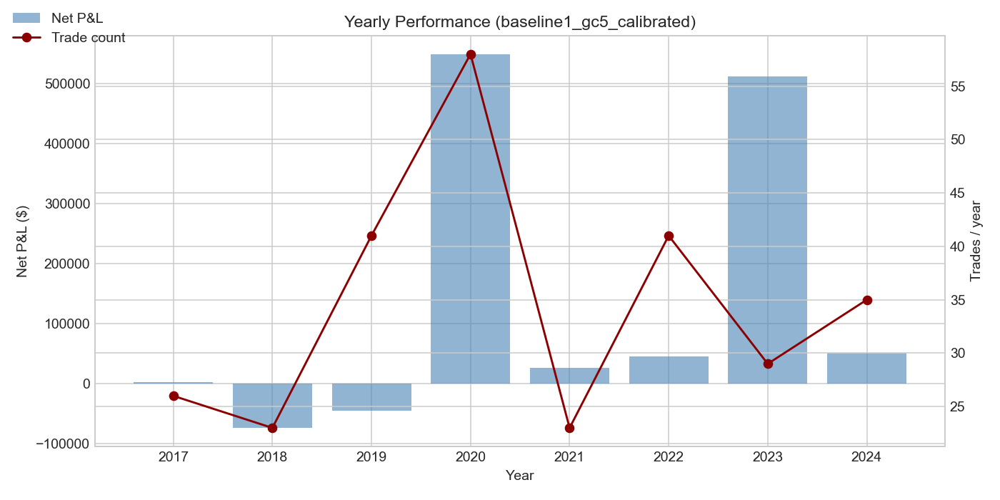
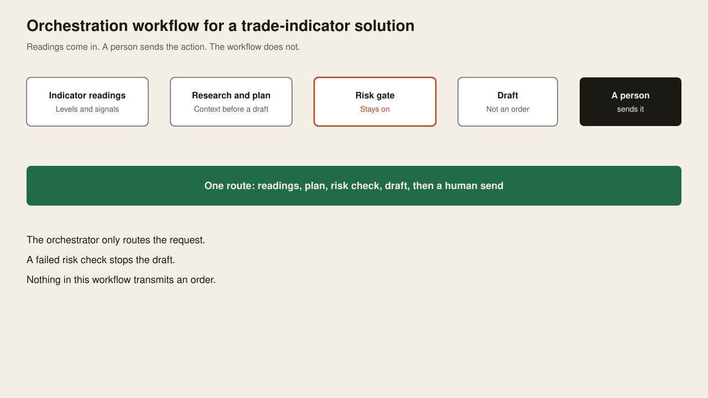
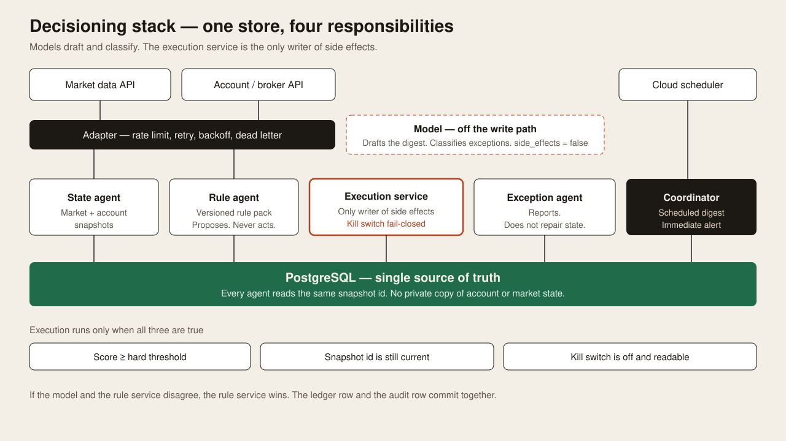
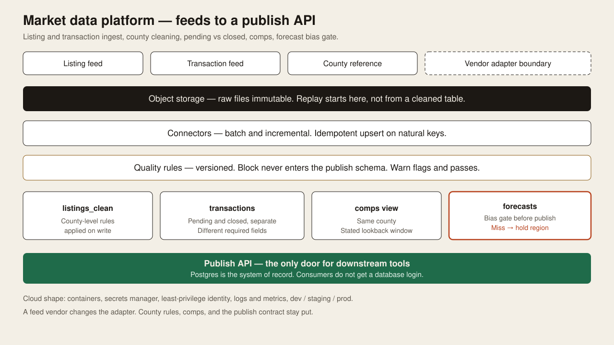
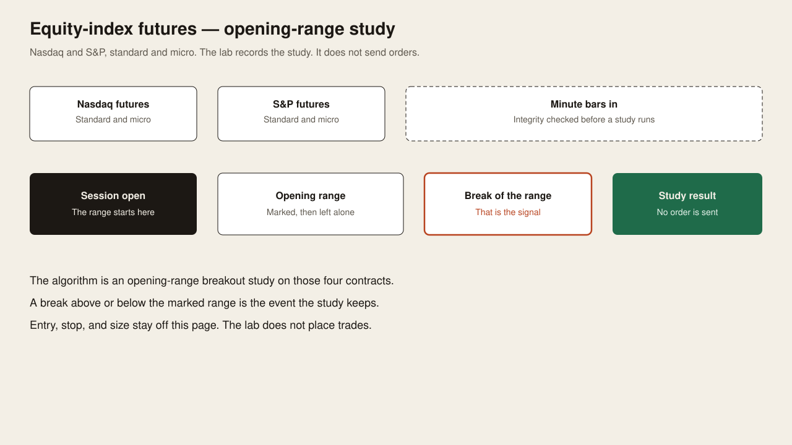
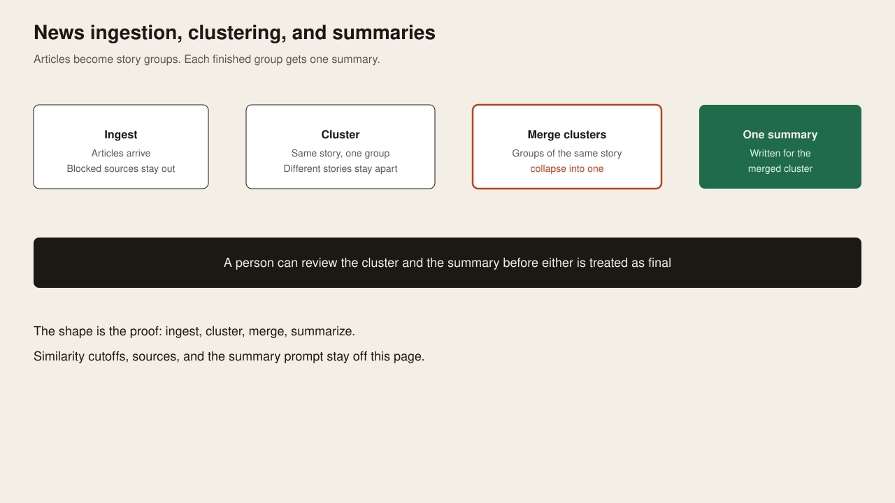
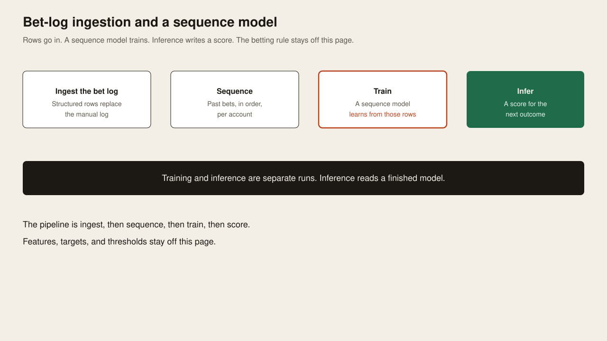

Full-stack and cloud. Production AI, data, and risk systems.
Each block is a case study. The figure is the cover. The text is the scope of the work. Data sources, implementation, and trading rules stay off this page.
Pending home sales forecast
National pending home sales, predicted against the actual series, 2021 through 2026. The forecast follows the seasonal turns. The gap between the lines is the miss.
Case study
The job was a production forecast of national pending home sales. Each month the model writes a prediction before the actual count is known. The chart is the scoreboard after the fact: predicted against actual, from 2021 through 2026.
The seasonal turns are in both lines. Where the lines separate, the forecast missed, and the miss stays on the chart. The page does not name the inputs or the fitting procedure.
CAM recovery likelihood

This is a walk-forward score for the likelihood of a CAM recovery. Each bar is one test year, 2009 through 2024, and that year was not in the training window. A taller bar means the score separated recoveries from non-recoveries more cleanly in that year.
Case study
The setting is commercial real estate. The question each year is which locations are more likely to recover common-area charges. The score is fit on earlier years and then judged on a year it has not seen.
The bars run from 2009 through 2024. A taller bar is a year when recoveries and non-recoveries were easier to tell apart. The features and the cutoff used in production are not on this page.
Gold futures backtest

Commodity futures, gold. The bars are the yearly result and the line is the trade count, 2017 through 2024. This is the scoreboard. The rule that produced it is not on this page.
Case study
This is a backtest of a gold-futures rule, marked to market by year from 2017 through 2024. The bars are net result. The line is how many trades that year contained. Profitable years and losing years are both on the chart.
The chart is the scoreboard a reviewer can check. The entry, the exit, and the position size are not on this page.
Trade-indicator orchestration

An orchestration workflow for a trade-indicator solution. Indicator readings are researched and planned, a risk gate stays on, and a draft is prepared. A person sends the action. The workflow does not.
Case study
Indicator readings come in. The workflow gathers context, writes a plan, and checks a risk gate that stays on. A failed check stops the draft. A draft is not an order.
A person sends the action. Nothing in the workflow transmits an order on its own. The indicator formulas are not on this page.
Trading algo decisioning

This decisioning system serves a trading algorithm. When a predefined threshold is breached, the snapshot is still current, and the kill switch is off, the execution service fires the action. The model drafts and classifies. It does not fire.
Case study
The system serves a trading algorithm. The model drafts and classifies. It is off the write path. One execution service is allowed to act, and only when three checks are true: the score clears a hard threshold, the snapshot is still current, and the kill switch is off and readable.
If the model and the rule service disagree, the rule service wins. A repeated request does not double-apply. Account and market state are not copied into the draft.
Real estate development platform

A real estate development platform. The agentic harness does three jobs: it ingests listing and transaction feeds, it keeps pending and closed apart and forms comps, and it writes a property summary while holding any forecast that fails its check. Downstream tools use one publish door.
Case study
Listing and transaction feeds land once, as raw files that are not overwritten. Checks run before anything reaches the publish schema. Pending and closed records stay separate. Comps are built inside one county. A forecast that fails its check is held instead of published.
Downstream tools read one publish door. They do not get a database login. Feed vendors, county-rule text, and the check thresholds are not on this page.
Equity-index futures research lab

This is the futures research lab. The contracts are equity-index futures: Nasdaq and S&P, each in a standard and a micro size. The algorithm marks the opening range, and a break of that range is the signal the study keeps. Entry, stop, and size are not on this page. The lab does not place trades.
Case study
The lab studies equity-index futures: Nasdaq and S&P, standard and micro. Minute bars are checked for integrity before a study runs. The study marks the opening range of the session. A break of that range is the event it keeps.
The lab records the study. It does not send orders. Entry, stop, and size are not on this page.
News ingestion, clustering, and summaries

Articles are ingested, grouped into story clusters, and merged when two clusters are the same story. One summary is written for the merged cluster, and a person can review the cluster and the summary. Similarity cutoffs, sources, and the summary prompt are not on this page.
Case study
Articles arrive and blocked sources stay out. Items that are the same story form one cluster. Clusters that later turn out to be the same story are merged. One summary is written for the merged cluster.
A person can review the cluster and the summary before either is treated as final. Similarity cutoffs, source names, and the summary prompt are not on this page.
A locked prompt suite is run on a baseline and on an adapted cultural model. The adapted model is an open-weights fine-tune: it starts from a public model and is adapted to the cultural task, while a frozen copy of those same weights is the baseline. Answers are scored blind. The sheet is unblinded only after scoring is finished, and a second reviewer can check a sample. The training recipe, prompts, and the score key are not on this page.
Case study
The change under test is an open-weights fine-tune. It starts from a public model and is adapted to a cultural task. A frozen copy of those same starting weights is the baseline, with no fine-tune applied. Both sides answer the same locked prompt suite.
Scoring is blind. The scorer does not see which answers came from the fine-tune. The key opens only after the sheet is done, and a second reviewer can rescore a sample. The training recipe, the prompts, and the score key are not on this page.
Bet-log ingestion and sequence model

The bet log is ingested as structured rows, replacing the manual log. Past bets are kept in order per account. A sequence model trains on those rows, and a separate inference run writes a score for the next outcome. Features, targets, and thresholds are not on this page.
Case study
A manual bet log was replaced with structured rows. Past bets stay in order, per account. A sequence model trains on those rows. Training and inference are separate runs. Inference reads a finished model and writes a score for the next outcome.
The figure is the shape of that pipeline. Features, targets, and thresholds are not on this page.